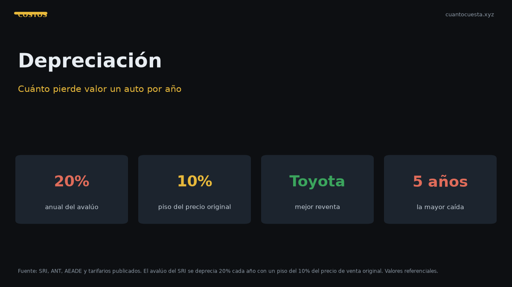

Depreciación: cuánto pierde valor un carro en Ecuador por año
El avalúo del SRI baja 20% al año, con piso del 10% del PVP. Cuánto pierde valor tu carro en el mercado real, qué modelos retienen mejor y una tabla a 5 años.

Un carro pierde valor cada año. Para el SRI, el avalúo baja un 20% anual, con un piso del 10% del PVP original: por más años que pasen, el avalúo no baja de ese piso. En el mercado real, la caída tiene su propio ritmo, y ahí el modelo y la marca pesan tanto como los años.
Esa diferencia —avalúo fiscal frente a precio de mercado— es la clave para entender cuánto vale realmente tu auto y cuándo conviene venderlo.
La regla del SRI: 20% anual con piso del 10%
| Año | Avalúo referencial (% del PVP) |
|---|---|
| 0 (nuevo) | 100% |
| 1 | 80% |
| 2 | 64% |
| 3 | 51% |
| 4 | 41% |
| 5 | 33% |
| ... | Sigue bajando |
| Piso | 10% del PVP |
El piso del 10% significa que, por más años que pasen, el avalúo no se extingue: siempre pagas IPVM y rodaje sobre al menos ese 10%.
El avalúo del SRI define tu matrícula, no tu precio de venta. Que el SRI te avalúe el auto en $8.000 no significa que puedas venderlo en $8.000, ni al revés. Son dos números distintos que se mueven a ritmos distintos.
Avalúo del SRI vs. mercado real
El SRI aplica una tabla que baja 20% cada año hasta el piso. El mercado no es lineal:
- El primer año es el más caro: un auto nuevo pierde típicamente entre 15% y 20% al salir del concesionario.
- Entre los 3 y 5 años la caída se estabiliza.
- Después de los 8-10 años la depreciación se desacelera y depende más del estado que del año.
Eso significa que un auto de 3 años puede mantener mejor valor de mercado que de avalúo SRI, y uno de 10 años puede caer por debajo del avalúo si está descuidado.
Qué modelos retienen mejor valor en Ecuador
La retención depende de la marca, la disponibilidad de repuestos, la red de servicio y la demanda.
| Marca o segmento | Retención referencial |
|---|---|
| Toyota (Hilux, Corolla, Fortuner) | Alta |
| Kia (segmentos populares) | Alta |
| Hyundai (populares) | Media-alta |
| Marcas con repuestos caros y red limitada | Baja |
| Modelos descontinuados o sin stock de repuestos | Baja |
Toyota y Kia suelen encabezar la retención en Ecuador: repuestos disponibles, talleres en todo el país y demanda estable en el mercado de usados. En el otro extremo, marcas con red limitada o modelos que salieron del catálogo pierden valor más rápido y tardan más en venderse.
Cómo afecta el momento de vender
Vender tiene un costo de oportunidad: si esperas, el auto vale menos; pero si vendes muy pronto, absorbes el golpe más fuerte de la depreciación.
- Vender al año: pierdes el bofetón inicial (15%-20%), pero tomas el auto más nuevo.
- Vender a los 3-5 años: suele ser el equilibrio; ya pasó la caída brusca y aún conserva valor.
- Vender a los 8-10 años: retienes poco, pero también expusiste menos capital.
| Momento de venta | Ventaja | Desventaja |
|---|---|---|
| Al año | Auto nuevo, fácil de vender | Mayor pérdida absoluta |
| 3-5 años | Equilibrio precio/depreciación | Ya perdiste cerca de la mitad |
| 8-10 años | Poco capital expuesto | Menor liquidez y menor precio |
La depreciación no se detiene mientras el auto está parado. Un vehículo sin uso y con mantenimiento atrasado se deprecia igual —o más— que uno usado a diario con servicios al día. El peor enemigo del valor no es el kilometraje, es el abandono.
Tabla de depreciación a 5 años
Estimación sobre un auto de $20.000 al momento de la compra:
| Año | Valor estimado de mercado | Pérdida acumulada |
|---|---|---|
| 0 | $20.000 | — |
| 1 | $16.500-17.000 | ~$3.000-3.500 |
| 2 | $14.000-14.500 | ~$5.500-6.000 |
| 3 | $12.000-12.500 | ~$7.500-8.000 |
| 4 | $10.500-11.000 | ~$9.000-9.500 |
| 5 | $9.000-9.500 | ~$10.500-11.000 |
A los 5 años, un auto típico vale cerca de la mitad de lo que costó. Las cifras son estimaciones: el estado real, el kilometraje y el modelo mueven la aguja bastante.
Cómo frenar la depreciación
- Mantén los servicios al día y guarda las facturas: un historial completo vale dinero al vender.
- Evita choques y reparaciones visibles. Un panel repintado no se recupera en el precio.
- No acumules kilómetros innecesarios si piensas vender pronto.
- Elige marcas con buena red de repuestos y talleres.
- Cuida el interior: la primera impresión mueve el precio final.
- No modifiques de forma que complique el traspaso o la revisión.
Cómo usar esto al comprar
- No compres un auto de 1 año esperando "no perder": perderás en la reventa.
- Un auto de 4-6 años ya absorbió la mayor caída: suele ser el mejor punto de entrada.
- Compara el precio pedido contra el avalúo del SRI: si el pedido está muy por encima, negocia o exigí una justificación del estado.
- Revisa el avalúo de ese modelo y año: te da el piso fiscal de referencia.
- Recuerda que la depreciación es un costo sin factura: no se paga en efectivo, pero se pierde en el momento de vender.
Cómo estimar el valor de tu auto hoy
- Consulta el avalúo del SRI para tu modelo y año, por placa.
- Busca publicaciones de autos idénticos (misma marca, modelo, año y kilometraje similar) en los portales de usados.
- Descarta los precios atípicos hacia arriba: casi siempre son autos con poco kilometraje o con precio "soñado".
- Ajusta por estado: historial de servicios, sin choques, interior cuidado.
- Compara con el avalúo fiscal: si el mercado está muy por encima, tienes margen; si está por debajo, tu auto está perdiendo valor más rápido de lo que la tabla sugiere.
Resumen práctico
- El avalúo del SRI baja 20% al año, con piso del 10% del PVP.
- El mercado no es lineal: el golpe más fuerte es el primer año.
- Toyota y Kia suelen retener mejor valor en Ecuador.
- A 5 años, un auto típico vale cerca de la mitad.
- Vender a los 3-5 años suele ser el mejor equilibrio.
- El mantenimiento documentado y no chocar son la mejor defensa contra la pérdida de valor.
Las cifras y porcentajes son referenciales y varían por modelo, estado, kilometraje y ciudad. Verifica el avalúo de tu vehículo y compara con precios reales de publicaciones similares antes de vender o comprar.
Sigue leyendo
Cambio de aceite en Ecuador: cada cuántos km y cuánto cuesta (2026)
Cuánto cuesta el cambio de aceite en Ecuador, cada cuántos km hacerlo según el tipo de aceite y
Cuánto cuesta mantener un carro eléctrico vs uno a gasolina en Ecuador
Mantener un eléctrico cuesta menos en servicios: no lleva aceite ni filtros. Pero los talleres
Cuánto cuesta mantener un auto por marca en Ecuador: tabla comparativa 2026
Tabla del costo anual real de mantenimiento por marca en Ecuador 2026 y cuánto suma esa diferen
Cuánto cuesta un seguro todo riesgo en Ecuador y cómo bajarlo
El seguro todo riesgo cuesta cerca del 4% del valor del auto: ~$600 al año para uno de $15.000.
Top 10: cuánto cuesta mantener cada auto al mes en Ecuador (2026)
Desglose del costo mensual real de mantener los autos más vendidos de Ecuador: matrícula, segur
Cómo usamos estos datos
Las cifras de esta guía provienen de fuentes públicas oficiales y tarifarios de concesionarios publicados. Los valores son referenciales: tasas municipales, promociones y precios de repuestos varían. Verifica siempre en la entidad o concesionario antes de decidir.